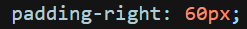
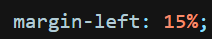

O objetivo da aula é explorar os modelos de caixa no CSS.
Iniciaremos falando de um que já conhecemos, o Padding, sendo o outro o Margin.
Padding
- "Padding" quer dizer "Preenchimento".
- Ele é utilizado para definir a distância das bordas internas comparado ao conteúdo.
- 
Margin
- "Margin" quer dizer "Margem".
- Ele é utilizado para definir a distância das bordas externas comparado ao container.
- 